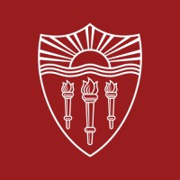
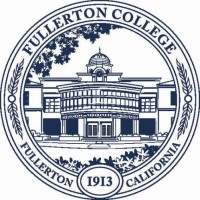
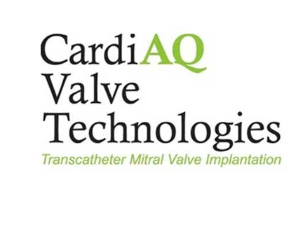
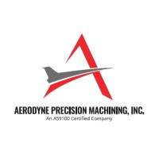

Cesar Renteria
Fullerton, CA • cesrenteria@gmail.com • https://www.linkedin.com/in/cesar-renteria-a609a6249/
Summary
Experienced CNC machinist and manufacturing specialist with over a decade in precision machining across aerospace, medical devices, space technology, and academia
Skills
- Languages: GD&T, Fanuc Macro B, G-code, Python
- CAD/CAM: Solidworks, NX, MasterCAM, ESPRIT
- Tools: GitHub Copilot, VS Code
- Other: Arduinos, Waterjet, 3D Printing, Laser Cutters, Metrology, CMM
Experience

Experimental CNC Machinist • University of Southern California
2023-Present
- Program and operate CNC mills/lathes, waterjets, laser cutters, and 3D printers.
- Design and machine precision components for USC teams (Formula SAE IC/EV, Combat Robotics, Rocket/Liquid Propulsion Lab, and research labs).
- Optimize designs for manufacturability and streamline setups in collaboration with student engineers.
- Mentor student operators in CNC programming and safe machine operation.
- Tools/Tech: NX, SolidWorks, MasterCAM; HAAS VF2 (4th axis), HAAS ST‑15Y; OMAX; Prusa MK4.
CNC Machinist • Relativity Space
2022-2023
- Machine 3D‑printed aerospace components on 5‑axis CNC.
- Embed Fanuc Macro B logic in setup procedures to reduce setup time and operator errors.
- Author SOPs for machining, inspection, and setups to standardize processes.
- Tools/Tech: Haas UMC 5‑axis, Fanuc Macro B, Renishaw Inspection+, MasterCAM.
Senior Prototype Technologist • Edwards Lifesciences
2015-2021
- Fabricate medical device prototypes and custom tooling in Advanced Technology R&D model shop.
- Design, program, and machine components across CNC mills/lathes, wire EDM, and micro CNC.
- Drive CAD/CAM workflows to deliver precision parts for engineering teams.
- Tools/Tech: ESPRIT, Sodick Wire EDM, HAAS, Microlution MR4, Willemin 408MT, OMAX.

Adjunct Instructor • Fullerton College
2015-2017
- Taught manual CNC programming for mills and lathes (lecture + lab).
- Covered shop math, speeds/feeds, and troubleshooting; developed course materials.
- Tools/Tech: CNC Simulators, Blackboard, Haas Programming Workbook.

R&D Machinists • CardiAQ
2014-2015
- Program and machine custom tooling and fixtures for engineering R&D.
- Company later acquired by Edwards Lifesciences.
- Tools/Tech: CNC mills/lathes, surface grinder, SolidWorks, MasterCAM.

CNC Machinist • Aerodyne Precision Machining
2007-2012
- Setup and operate CNC lathes; perform first‑article and CMM inspections.
- Machine precision components to spec; ensure quality control.
- Tools/Tech: Takisawa and Emco CNC lathes.
Education
Associate of Science • Manufacturing Technology • Fullerton College
2007-2010
Relevant coursework: CNC, Machining, Blueprint Reading, Mill, Lathe, Grinding, Calculus 1-3
Associate of Science • Industrial Drafting and Design • Fullerton College
2011-2012
Relevant coursework: AutoCAD, Solidworks, MasterCAM, Manufacturing Processes, ASME Y14.5-2018 GD&T